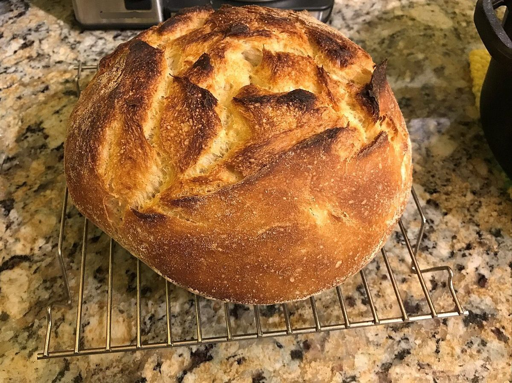
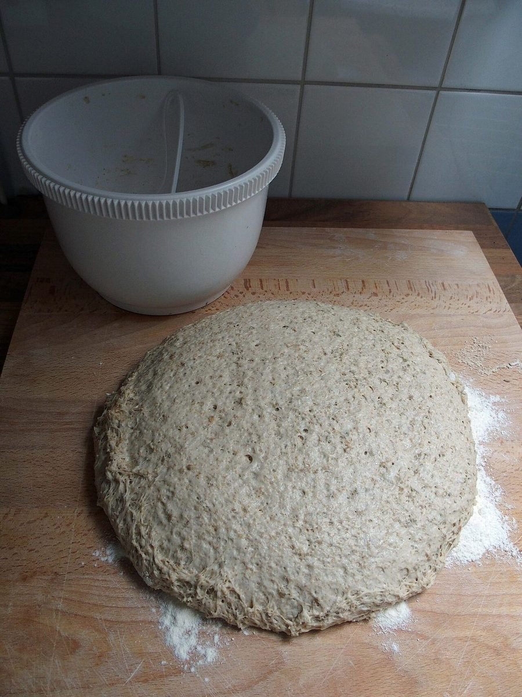

きらぼしベーカリー
BAKERY / 栃木県那須烏山市
栃木県那須烏山市にあるパン屋「きらぼしベーカリー」のご案内ページです。営業時間やメニューなど、詳しいことは準備中。いまはInstagramで様子をのぞけます。
五つの球(写真はイメージ)
カチ、カチ、カチ、カチ。





端の球がぶつかると、反対の端の球が跳ねる。そんな「ゆりかご」の振り子を、このサイトの見立てにしました。写真はすべてフリー素材のイメージで、お店のものではありません。
制作側の連想
五つの球と、五つのページ
「ニュートンのゆりかご」という見立ては、制作側の連想で、お店の理念・由来とは無関係です。屋号の由来も分かりません。ページ上部の五つの銀の球が、このサイトの五つのページに対応していて、いま開いているページの球が持ち上がっています。
ご案内(確認できたものだけ)
お店の情報
| 所在地 | 〒321-0531 栃木県那須烏山市三箇1821-5 |
|---|---|
| 電話 | 0287-88-9199 |
| 営業時間 | 準備中 |
| 定休日 | 準備中 |
| メニュー・価格 | 準備中 |
| ご予約 | 準備中 |
| 駐車場 | 準備中 |
| @kiraboshi_bakery |